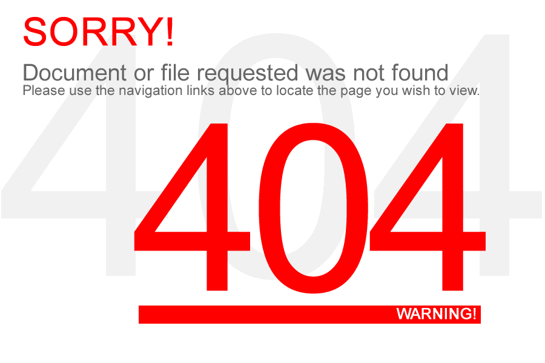

<div class="not-found-page text-center">
    <mat-card class="not-found-page__card">
        <mat-card-content>
            
        </mat-card-content>
        <mat-card-footer>
            <mat-card-actions>
                <button mat-raised-button color="accent" routerLink="/">
                    {{resource.getString('TAKE_ME_HOME')}}
                </button>
            </mat-card-actions>
        </mat-card-footer>
    </mat-card>
</div>